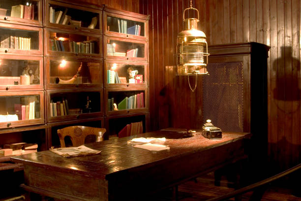

Library Lantern
It was a rainy afternoon and the library smelled like paper and tea. Tucked between pages of an old travelogue I found a folded note: a sentence that made me laugh and a quick sketch of a map to somewhere I had never been.
The note rerouted my plans for the day. I spent hours tracing the places mentioned in pencil, then sat with a different book until the rain stopped. It felt like a small gift from anonymity: a reminder that people leave soft traces for strangers.